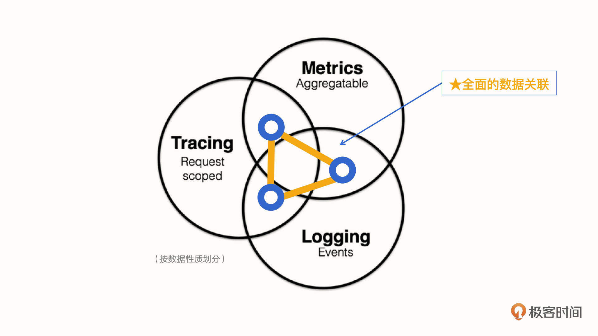
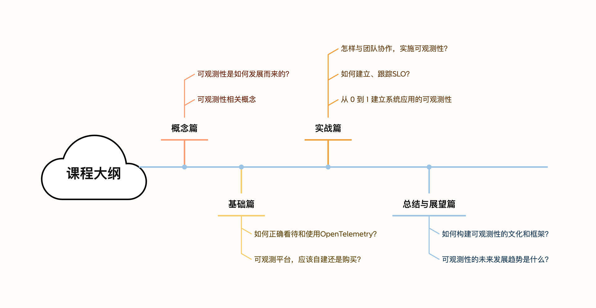

- 00 开篇词 可观测性，让开发和维护系统的你每晚都能睡个好觉！.md
- 01 以史鉴今：监控是如何一步步发展而来的？.md
- 02 基本概念：指标+日志+链路追踪=可观测性？.md
- 03 相互对比：可观测性和传统监控有什么区别？.md
- 04 OpenTelemetry：如何利用OpenTelemetry采集可观测数据？.md
- 05 构建可观测平台：应该购买商业产品还是自己搭建？.md
- 06 团队合作：不同团队如何高效共建可观测性？.md
- 07 软件开发：如何利用可观测性进行驱动？.md
- 08 建立 SLO：如何为系统可靠性的量化提供依据？.md
- 09 跟踪 SLO：如何基于错误预算采取行动？.md
- 10 实战 1：从 0 到 1 建立系统应用的可观测性.md
- 11 实战 2：基于可观测性数据进行问题分析和根因定位.md
- 12 实战 3：构建基于 Kubernetes 的系统可观测性.md
- 13 实战 4：建立软件持续集成和发布的可观测性.md
- 14 文化建设：如何构建可观测性的文化和框架_.md
- 15 展望未来：可观测性在未来的发展趋势是什么？.md
- 结束语 在实践中，用科学的方法分析和解决问题.md
00 开篇词 可观测性，让开发和维护系统的你每晚都能睡个好觉！
你好，我是翁一磊。
马克·安德森（Marc Andreessen）说过这样一句话：“软件正在吞噬世界 ”。这句话发表于2011年，但是十多年后的今天，我想它更好的演绎应该是“云原生正在吞噬世界，万物皆可上云”。面对云原生这个新赛道，BAT、美团、字节跳动、快手等一线大厂都在加速推进业务的容器化、云原生化。
也正是由于各大厂商对云原生的奔赴，传统的技术架构面临着巨大的冲击，我们的监控对象也由传统的单体结构，变成了分布式的多个微服务。监控，被架到了一个不得不革自己命的位置。在这样的背景之下，可观测性（Observability）脱颖而出。
CNCF 早在定义云原生的概念时就提到了可观测性 ，它声称可观测性是云原生时代的必备能力。而随着可观测性的概念明晰化，相关产品纷纷涌现，“可观测性”越来越成为云原生一个绕不开的话题。
打开这门课程的你可能是系统和应用的开发、测试、或是运维同学，或许你在系统上线和维护的过程中遇到过下面这些问题：
- 某个新版本发布上线之后，发现主机的 CPU 使用率持续飙高，但不知道具体原因在哪，只能根据过往的经验一一排查，却迟迟找不到问题根源。
- 新版本上线之后，经常很难判断功能是不是完全正常，不好确定用户在使用时有没有遇到问题。只能等着用户找客服投诉之后才知道哪个模块出现了报错。
- 基础设施方面，通过监控搞了一大堆稀奇古怪的仪表盘，看着花花绿绿一大片，可是又不能反映出业务的真实情况，也不能跟随业务的变化而灵活调整。
手忙脚乱之中，你难免就有些自我怀疑，问题到底在哪呢？有没有更好的方法可以保证程序的正常和稳定运行？
接下来，就有请出我们这节课的主角：可观测性。
什么是可观测性？
可观测性的概念最早出现在控制论中，强调的是可以从系统向外部输出的信息来推断出系统内部状态的好坏。而在计算机系统和软件领域，本质上也是类似的含义：它可以从系统和应用对外输出的信息（包括你可能已经知道的指标、日志和链路），来帮助我们了解应用程序的内部系统状态和运行情况。
但可观测性并不只是简单的数据采集，它更强调对这些数据的关联和分析，这能够帮助我们快速定位，找到问题的根本原因。当然，最终的目的是保障系统的可靠性，达到服务质量的目标。

因此，可观测性适用于任何关心代码在生产环境中的运行质量的人。它可以监测和解决生产系统中复杂而新颖的问题。具体到岗位上：
可观测性能够架起开发人员和运维人员构建合作的桥梁，运维人员使用可观测性来发现问题，给故障现场提供足够的数据让开发人员进行分析，而开发人员可以使用可观测性来指导运维人员定位问题，并使用工具来质疑和验证假设；
此外，测试、运维、DevOps 工程师、SRE 工程师等角色都可以了解和学习可观测性，以此提高产品质量和服务可靠性。
为什么需要可观测性？
可是，我们为什么需要可观测性？为什么是现在？其实，它是在日益迫切的系统和应用软件的维护需求下诞生的。
系统和应用是在一步步地升级与换代的。我进入互联网行业已经十几年了，这种感受有增无减。就拿我第一份工作支持的微软企业级邮件系统 Exchange Server 来说吧，Exchange Server 从最开始的单机版本，到后来分为了前端和后端服务器，再后来，为了更好地满足用户访问和负载需求，分为了边缘、传输、邮箱服务等多种角色的服务器，这时候如果碰到问题，再一个个去翻阅 Windows 的 Events 事件和 Exchange 的日志，效率就比较低了。
Exchange 邮件服务器架构的发展，只是应用软件发展的一个缩影。软件架构从单体应用到三层架构（前端 Web，应用 App 层，以及后端的数据库），再到现在的微服务架构，无疑是越来越复杂了。
如今，通过云平台，只需点击一个按钮，就可以操作和使用跨地理位置的基础设施或者微服务架构，它们具有可扩展性、可维护性、灵活性等多种优点。但这种部署方法也带来了一些意想不到的后果，当系统和应用出现问题的时候，找到问题的根本原因变得越来越难。
我们维护系统应用的手段也随之发生了很多变化。以前，面对不那么复杂的系统架构，我们常用的维护手段还是建立监控，然后制作一些仪表盘来展示各个层面指标的情况，再加上一些告警对各种指标的阈值进行监控和通知，这样就可以解决我们所说的 Known-Unknowns，也就是已知的未知问题（已经知道，但不理解）。也就是说，你凭借着经验或是感觉，能够很快定位到问题的根源。
但是现在，不仅排查故障的难度越来越大，错误还有了更多潜在的组合，传统的排障方式愈发没有效率。今天你面对的，更多的是未知的未知问题（既不理解，也不知道），即 Unknown-Unknowns。
而可观测性，就是解决这类未知的未知问题的必要手段。当系统中出现越来越多的新问题，当未知的故障组合越来越多，不断升级的复杂性让我们越来越有必要为系统和应用构建可观测性。
如何学习可观测性？
在这个可观测性的课程系列中，我将从下面几个方面为你展开讲解。

- 概念篇：为了更好地理解可观测性，我会首先带你理一理计算机和互联网的发展，看一看监控在这一过程中的发展历程。接着，我会详细解读可观测性相关的基本概念，包括你可能经常听到的可观测性三支柱。之后我们会一起辨析可观测性和传统监控的区别。借助这些内容，希望能帮助你了解可观测性以及相关的概念，为接下来的正式学习做好铺垫。
- 基础篇：我会首先介绍一下 OpenTelemetry ，这是目前可观测领域非常成熟和热门的标准和规范。在此基础上，你会进一步了解如何实现和建立非某个供应商锁定的可观测性。接下来，我们还会看到购买或自己搭建（例如基于开源软件再进行一些二次开发）可观测性的利弊，拥有全局观念，在有需求的时候理智下判断。
- 实战篇：这部分是专栏的重头戏，毕竟可观测性最重要的目标，就是保障系统和应用的服务可靠性。这个模块，我们会讲到团队协作，可观测驱动的开发，建立、跟踪SLO等话题。然后我会选取微服务架构的系统，带你搭建起这个系统的可观测性，让你在动手操练的过程中更好地掌握可观测性，并能够通过可观测性来分析和解决问题。
- 总结与展望篇：我会为你讲述如何构建可观测性的文化和框架，让你了解在企业中推广可观测性需要优先考虑的关键能力。我还会给你介绍可观测性未来的发展趋势。
最后，再简单介绍一下我自己吧。我曾经就职于微软、HP、Dell EMC 等外企，从最初的技术支持，到售前以及项目交付，再到解决方案集成与验证，相关的工作可以说是做了一圈。从外企出来之后，我负责过多云管理产品，现在在观测云负责售前技术和客户服务工作。
计算机软件领域的可观测性，在国外是在 2018 年左右提出的，现在已经有了不少玩家，比如久负盛名的 DataDog。而在国内，去年的这个时候还极少看到相关的报道。到了今年，可观测性已经成为了非常热门的话题，甚至最近每周都能看到相关的线上直播。
但是，近几年的观察让我意识到，很多时候人们只是把原来传统的监控换了一个壳子，变成了可观测性。正所谓新瓶装旧酒，但其实这并不是真正意义上的可观测性。而这门课程的目标就是矫正这种观点，看清可观测性的本质和价值。
也希望这门课程，能够帮助你把可观测性真正落实到系统和应用的开发、测试、维护或是运营阶段，建立系统和服务可靠性的保障，提前发现潜在问题，快速定位根本原因，缩短 MTTGBTB（即 Mean Time to Get Back to Bed），每晚都能睡个好觉！
如果你也对一个可观测的系统有所憧憬，但却对细节和具体实现方法一知半解，那就加入我吧，我们课程中见！
扫描链接内小助手微信二维码，回复“可观测性”，加入学习交流群，一起交流进步～
© 2019 - 2023 Liangliang Lee. Powered by gin and hexo-theme-book.